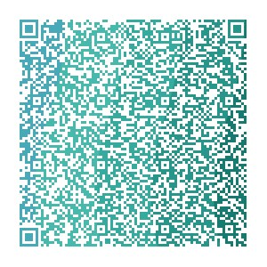

这里是中小学学习研究与讨论会（东联高级研究与讨论学会）网站，欢迎你的加入！

这是我群二维码，欢迎加入学习
本群介绍:
中小学学习与讨论会（也称东联高级研究与讨论会）是一种学会，也是学习资料共享群，致力于中小学生学习发展，为中小学生营造良好的学习环境，氛围。
在这里，有各种年级，各种版本的电子课本和学习资料，中考真题，欢迎热爱学习的同学进入！
*温馨提示：进群需要修改群昵称！
年级+姓名，是五四制的，加上所在地区，不是的不需要加。
我群群公告以及群聊规则
1.本群是中小学学习研讨群和学习资料共享群，欢迎热爱学习的同学进入。
2.本群提倡友好交流，鼓励大家多发言，多互动。重在价值分享。团结·互助·努力·拼搏。
3.禁止无意义的刷屏、发送广告信息以及谩骂等不良消息，聊天信息不得包含任何恶意人身攻击行为，不得发布带有煽动性，过激性的信息，严禁发布反党反政府等负面消息，违者直接清退出群！
★4.未经群主或管理员同意，私自修改涉及群聊信的，或危及群聊安全的，群主和管理员要及时制止并适当惩罚。
5.为保证群内安全和人数减少，进群人员慎退，禁止宣传其他群聊的信息。（特殊情况可以向群主联系）
6.群成员应时常主动关注群公告，便于互相联系，获取信息，觉得群聊信息过多的，可开启“免打扰”功能。
致管理员：
1.管理员在非必要情况下不得介入群权限设置，及群公告修改！
2.管理员应维护好群内秩序，正确引导学员参与学习研究讨论，热心回答和进取，帮助学员解决问题。
★3.对于宣群，刷屏者，和一切不遵守群规者，第一次警告，第二次处1小时禁言，违规次数越多，禁言时间逐级递增，若屡教不改的，管理员可以不向群主进行申请，直接踢出群聊。
★特殊公告：服从并监督管理员的管理，对管理员执行管理权力有异议者，可向群主提出申诉。
★学习资料文件分享要求:
支持文档，表格，PDF，PPT，可使用文档格式（可以用WPS office文档，也可以使用微软文档 Microsoft Word或微软办公 Microsoft Office ），表格，PDF，PPT也可以使用WPS office，或微软办公 Microsoft Office ，也可以使用微软表格（Microsoft Excel），微软PPT（Microsoft PowerPoint）
还支持百度网盘链接和希沃白板发送。